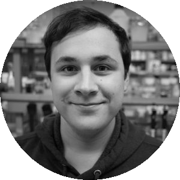
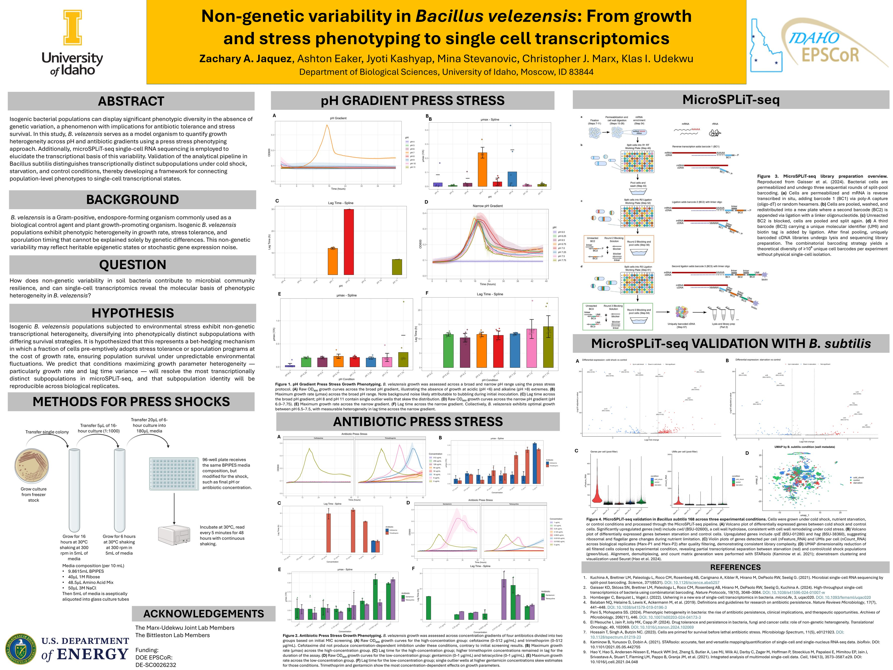
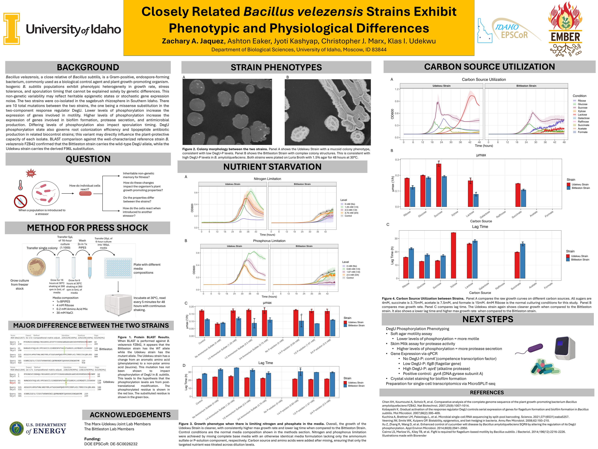

PhD, Microbiology, Molecular Biology & Biochemistry
Aug 2024 – PresentDepartment of Biological Sciences, University of Idaho, Moscow, ID
Advisor: Dr. Klas Udekwu

PhD Student, Biological Sciences — University of Idaho
Department of Biological Sciences, University of Idaho, Moscow, ID
Advisor: Dr. Klas Udekwu
School of Molecular Biosciences, Washington State University, Pullman, WA
Olympic College, Bremerton, WA
Udekwu Lab, Department of Biological Sciences, University of Idaho, Moscow, ID
Department of Biological Sciences, University of Idaho, Moscow, ID
Konkel Lab, Department of Molecular Biosciences, Washington State University, Pullman, WA
Spectra Laboratories Kitsap, Poulsbo, WA
Spectra Laboratories Kitsap, Poulsbo, WA
Laboratory Corporation of America, Seattle, WA
Contributed Posters


University of Idaho
Hybrid long/short-read assembly & annotation, comparative genomics, pangenomic analysis, phylogenomic analysis, biosynthetic gene cluster prediction
R, Python, Bash
Clinical and environmental microbiology, analytical chemistry, bacterial growth kinetics, anaerobic culture, QA/QC